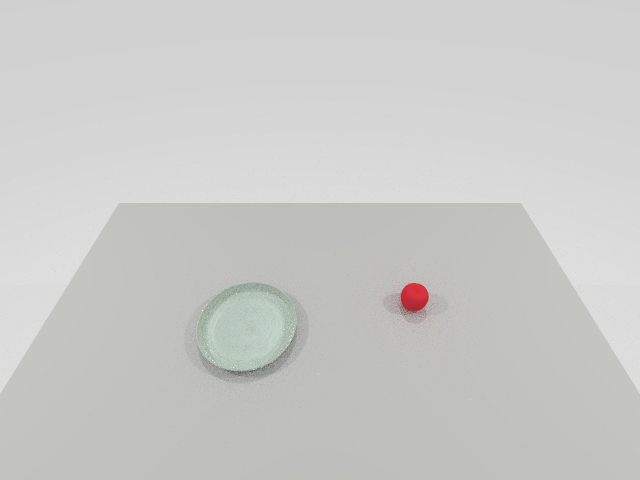
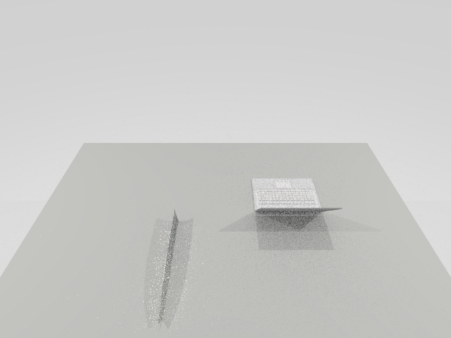
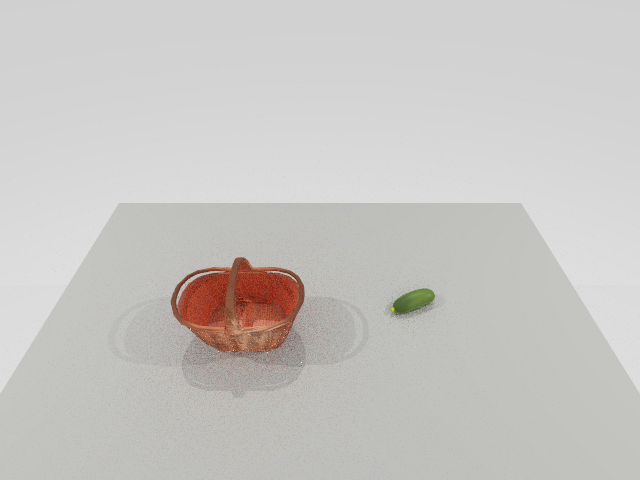
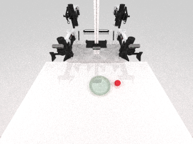
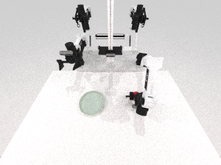
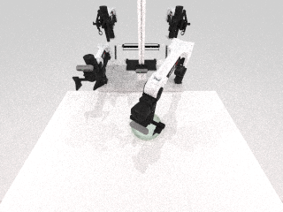
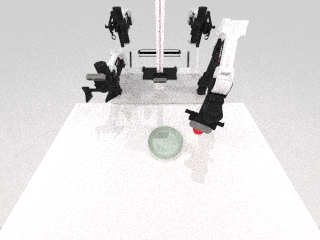
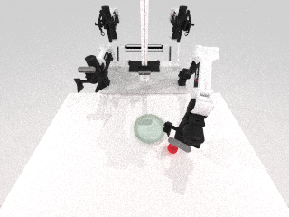

RoboTwin
123 / 123
EXECUTION ELIGIBLE[COMPUTED] [CONFIDENCE: HIGH] 从 5090 的现有对象目录实时发现，全部进入执行候选。
[COMPUTED][CONFIDENCE: HIGH]基于 yezheng04/robotwin-text2env-demo 的场景布置管线已接入 RoboTwin 现有资产，并由 schema、实机 rollout、失败留档与可重放补丁共同约束。
[COMPUTED][CONFIDENCE: HIGH]目录接入、候选门控、任务输入、RoboTwin smoke、双任务解耦、blocker、handoff 与受限 learned-policy promotion 均有 verifier 和哈希证据。
[KNOWN][CONFIDENCE: HIGH]新 promotion 仅覆盖 privileged initial-pose-conditioned open-loop trajectory policy；它不提升旧 ACT、也不证明视觉、语言条件、闭环控制或广义跨任务泛化。
[KNOWN] [CONFIDENCE: HIGH] 证据链接全部指向本报告内的本地资产。
| # | 验收项 | 结论 | 证据 |
|---|---|---|---|
| 01 | selection2env 与任务程序 schema | PASS [COMPUTED] [CONFIDENCE: HIGH] placement、task binding、SHA 与引用验证均被强制。 | selection2env schema · task program schema |
| 02 | RoboTwin / AgenticSim / Articraft 目录接入 | PASS [COMPUTED] [CONFIDENCE: HIGH] 123 / 8 / 9,996，且执行资格边界明确。 | source audit · RoboTwin catalog |
| 03 | 至少 3 个任务、2 个可执行样例与 1 个 blocker | PASS [COMPUTED] [CONFIDENCE: HIGH] 三个支持任务均有 Text2Env/task 输入、smoke 与采集证据；drawer/mug 保留 task-API blocker。 | task inputs · manifest · typed blocker |
| 04 | 超出碰撞检查的视觉/语义 critique | PASS [COMPUTED] [CONFIDENCE: HIGH] 强制检查 collision、visual plausibility、task intent、occlusion、reachability、support/stability。 | initial review · final relation review |
| 05 | 候选、placement、代码 diff、命令、日志、图像与视频 | PASS [COMPUTED] [CONFIDENCE: HIGH] 可重放补丁生成相同 Git tree；运行命令、stdout/stderr、失败截图和连续视频均已打包。 | patch · commands · asset hashes |
| 06 | generation2env blocker memo | PASS [COMPUTED] [CONFIDENCE: HIGH] forge 与 material sidecar 的输入、导入和物理门控均为 typed blocker，不冒充执行结果。 | blocker memo |
| 07 | Gaochen pipeline handoff API | PASS [COMPUTED] [CONFIDENCE: HIGH] /collect 输出与 /train、/evaluate 读取字段均已结构化定义。 | handoff contract |
| 08 | 同一场景运行至少两个不同任务 spec | PASS [COMPUTED] [CONFIDENCE: HIGH] 相同 scene/path/SHA 与初始像素；两个 check_success 通过；连续视频为 589/585 帧。 | decoupling report · continuous video proof |
| S1 | 补充：受限 learned-policy promotion | PASS [COMPUTED] [CONFIDENCE: HIGH] 独立 pose-conditioned policy 通过 4/4 held-out、4/4 domain randomization、3/3 can/basket seed holdout；旧 ACT 1/4 失败仍保留。 | promotion record · videos and boundary |
[KNOWN] [CONFIDENCE: HIGH] 搜索可见性不自动等于模拟器可执行性。
[COMPUTED] [CONFIDENCE: HIGH] 从 5090 的现有对象目录实时发现，全部进入执行候选。
[COMPUTED] [CONFIDENCE: HIGH] alias 仅在 backend_asset_id 存在于 RoboTwin 目录时可选。
[COMPUTED] [CONFIDENCE: HIGH] 元数据可搜索；默认 execution_eligible 为 0，避免把未导入 URDF 伪装为可用资产。
[COMPUTED] [CONFIDENCE: HIGH] 3 个支持任务 + 1 个诚实 blocker。

[COMPUTED] [CONFIDENCE: HIGH] Base_Task、CuRobo、生成动作与双任务复用均有证据。

[COMPUTED] [CONFIDENCE: HIGH] 资产 smoke、Base_Task smoke、collect dry-run 与官方 rollout 已保留。

[COMPUTED] [CONFIDENCE: HIGH] 资产、动作与采集链路均有本地视频和结构化日志。
[COMPUTED] [CONFIDENCE: HIGH] 两次 reset 使用相同 placement bytes。

[COMPUTED] [CONFIDENCE: HIGH] 两个 fresh rollout 的初始 observer 像素逐字节相同；apple 尚未满足任一最终关系。
[COMPUTED] [CONFIDENCE: HIGH] apple → plate；XY 距离 0.0115 m，Z 差 0.0068 m，双夹爪释放。视频为 589 帧、12 fps、49.08 秒的连续 simulator-step capture。
[COMPUTED] [CONFIDENCE: HIGH] apple → left_front_reachable_area；距中心 0.0143 m，在 0.03 m tolerance 内。视频为 585 帧、12 fps、48.75 秒的连续 simulator-step capture。
[COMPUTED] [CONFIDENCE: HIGH] 同一声明策略在预注册 split 上评测；三组视频均为连续 simulator-step capture。
[COMPUTED] [CONFIDENCE: HIGH] Signature-disjoint、scripted-feasible placements；每段 143 frames，首段为 seed 6100。
[COMPUTED] [CONFIDENCE: HIGH] Background、lighting、camera、table height 已声明并实际采样；每段 143 frames。
[COMPUTED] [CONFIDENCE: HIGH] Train seeds 7200/7201；held-out seeds 7300/7301/7302；固定 placement；每段 144 frames。
[KNOWN] [CONFIDENCE: HIGH] 视频均已复制到报告目录。
[COMPUTED] [CONFIDENCE: HIGH] 连续 simulator-step capture：640 decoded / 640 unique frames。
[COMPUTED] [CONFIDENCE: HIGH] 连续 simulator-step capture：531 decoded / 531 unique frames。
[COMPUTED] [CONFIDENCE: HIGH] 连续 simulator-step capture：527 decoded / 527 unique frames。
[KNOWN] [CONFIDENCE: HIGH] 失败没有被覆盖或删除。

[COMPUTED] [CONFIDENCE: HIGH] 初始几何使动作计划未能形成成功关系。

[COMPUTED] [CONFIDENCE: HIGH] apple 被送出有效桌面区域，促成目标点约束修复。

[COMPUTED] [CONFIDENCE: HIGH] 右侧区域暴露跨臂可达性问题，随后改为左前可达区域。

[COMPUTED] [CONFIDENCE: HIGH] 成功移动但距严格边界差 0.022 m；显式加入 0.03 m verifier tolerance 后重跑通过。
[COMPUTED] [CONFIDENCE: HIGH] 本地与 5090 使用相同 patch-id。
PASS workspace verification docs=11 static_runs=4 asset_smoke_runs=3 basetask_smoke_runs=3 collect_dry_runs=3 fresh_collect_dry_runs=2 official_rollouts=3 generated_rollouts=2 sceneagent_acceptance=8/8 scene_task_videos=589+585 sim_supported=task_apple_plate,task_laptop_knife,task_vegetable_basket unsupported=task_drawer_mug_blocker
[KNOWN] [CONFIDENCE: HIGH] 外层 local/5090 工作区均含本任务及其他未提交改动；可复现声明绑定 clean upstream commit、patch SHA 和结果 tree，不绑定外层 dirty HEAD。未经明确请求没有 push。
[COMPUTED] [CONFIDENCE: HIGH] 目录接入、失败轨迹、promotion 数据、PNG、连续 MP4 与机器报告均由 report manifest 做逐文件 SHA-256 索引。
| 资产组 | 内容 | 状态 |
|---|---|---|
| Scene task decoupling | 所有成功与失败目录、camera PNG、observer MP4、rollout report、policy trace | BUNDLED |
| Three task smoke | asset smoke、Base_Task smoke、official rollout、generated rollout | BUNDLED |
| Contracts and catalogs | schema、task programs、unified catalogs、queries、drawer/mug static run | BUNDLED |
| Reproducibility | source lock、replay patch、test logs、verifier output、SHA-256 manifest | BUNDLED |
| Policy promotion | training reports、held-out/randomized/cross-task episodes、连续视频、官方 background receipt、旧 ACT negative parent | BUNDLED |
{kind=link}